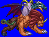
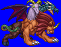
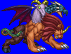
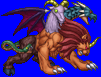

Height: Around 5 meters Weight: About 1500 lbs.
Habitat: Volcano Origin: Greece
Meaning: Male goat
A creature with the head of a goat and the body of a lion. During the dark ages, the chimera was painted as a divine animal, taking different forms as the seasons changed. Chimeras usually live in volcanoes or hot places. In the middle ages, the Chimera became known as a monster, able to spit fire and maliciously burn villages and forests to the ground.